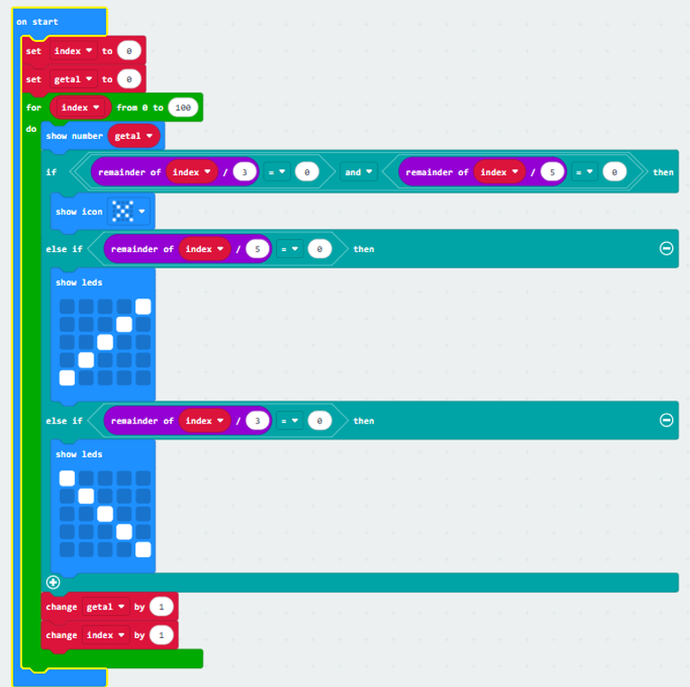
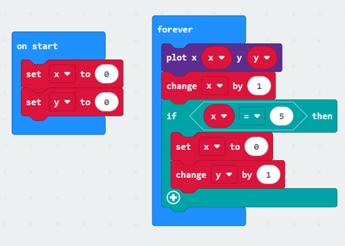
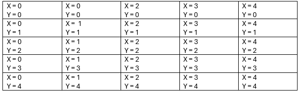

Opdracht 3.1: Links of rechts
- Stap 1: Open het project hier en druk op “Edit code”.
- Vraag 1: Wat gebeurt er wanneer je de micro:bit start?
Antwoord: Je ziet een stipje. - Vraag 2: Wat gebeurt er wanneer je op één van de knoppen drukt?
Antwoord: Er wordt een plaatje weergegeven. - Vraag 3: Wat zou er gebeuren wanneer je op de A-en de B-knop tegelijkertijd zou drukken?
Antwoord: Wanneer je de micro:bit in je handen hebt, is het heel eenvoudig om op beide knoppen tegelijkertijd te drukken. Online is dat wat lastiger; hoe kun je met één muis twee knoppen tegelijkertijd indrukken? Gelukkig is hier goed over nagedacht. - Stap 2: Ga in het project naar Input en sleep een ‘on button A pressed’ naar het scherm met opdrachten.
- Vraag 4: Wat gebeurt er nadat je dit blok hebt toegevoegd en op A+B hebt ingesteld?
Antwoord: Dan moet je A+B klikken om het te activeren. - Vraag 5: Wat gebeurt er wanneer je op de A+B-knop drukt?
Antwoord: Dat komt er een plaatje. - Vraag 6: Waarom gebeurt dit?
Antwoord: Omdat je de code hebt vertelt LEDs te laten zien wanneer je op een bepaalde knop klikt. - Stap 4: We hebben een extra controle nodig in het IF-blok. Druk hiervoor op het plus-teken onderaan het if-blok. Er komt nu een leeg ‘else if’-blok bij.
- Vraag 7: Waar moet de code komen die controleert of de A-én de B-knop worden ingedrukt? Waarom kan dit niet in het ‘else if’-blok dat net is gemaakt?
Antwoord: Die moet erbij staan en die kan niet in het else if blok omdat dat is als het een andere rit gebeurt dus dat is niet hoe het werkt. - Stap 5: Pas het programma zo aan, dat wanneer de A-en B-knop allebei worden ingedrukt, de micro:bit een horizontale lijn in het midden van de micro:bit toont.
- Vraag 8: Waarom gebeurt dit?
Antwoord: Omdat je de LEDs hebt veranderd. - Stap 6: We hebben een extra controle nodig in het IF-blok. Druk hiervoor op het plus-teken onderaan het if-blok. Er komt nu een leeg ‘else if’-blok bij.
- Vraag 9: Waar moet de code komen die controleert of de A-én de B-knop worden ingedrukt? Waarom kan dit niet in het ‘else if’-blok dat net is gemaakt?
Antwoord: Onder de code dat je A+B moet klikken. - Stap 7: Pas het programma zo aan, dat wanneer de A-en B-knop allebei worden ingedrukt, de micro:bit een horizontale lijn in het midden van de micro:bit toont.
Opdracht 3.2: Rock, paper, scissors
- Stap 1: Ga naar hier en druk op “Edit code”. Hier zie je een applicatie die nog niet af is. Bekijk en test de applicatie, voordat je verder gaat.
- Vraag 1: Wat is de output als je op knop A drukt?
Antwoord: Niks. - Stap 2: Teken in het bovenste blok een steen, in het tweede blok een vel papier en in het derde blok een schaar.
- Vraag 2: Wat gebeurt er nu wanneer je op de A-knop drukt?
Antwoord: Je krijgt een van de 3 plaatjes willekeurig toegewezen. - Vraag 3: Bekijk de code. Wanneer toont de micro:bit een steen, nadat je op de A-knop hebt gedrukt? En wanneer een vel papier?
Antwoord: Het is random. - Vraag 4: In de code zie je het if-statement ‘if randomNumber = 1 then’ en iets naar beneden ‘else if randomNumber = 2 then’. Wat is het verschil tussen if en else if?
Antwoord: If = als en else if is “en anders als”. - Vraag 5: Waarom zie je voor de schaar helemaal geen if-statement staan?
Antwoord: Als het randomnumber 3 is. - Vraag 6: Wanneer wordt de code in het ‘else’-blok uitgevoerd?
Antwoord: Als het randomnumber 3 is.
Opdracht 3.3: Variabelen, loops en ifs
- Vraag 1: Beschrijf in je eigen woorden wat een if-statement is. Waarom zijn if-statements belangrijk tijdens het programmeren?
Antwoord: Zodat je een bepaald iets kan uitvoeren op een bepaalde voorwaarde. - Vraag 2: Wat is het verschil tussen ‘if’ en ‘else if’?
Antwoord: If = als en else if is “en anders als”. - Vraag 3: Wanneer wordt de code in een ‘else’-blok uitgevoerd?
Antwoord: Na een bepaalde voorwaarde of conditie. - Vraag 4: Bekijk de code hieronder. ‘cijfer’ is groter dan tien én groter dan vijf. Wat wordt de output van de micro:bit? Waarom?
Antwoord: 10, want die is het hoogste en dichtbij de variable set cijfer to 12. - Vraag 5: Welke verschillende loops ken je?
Antwoord: Repeat, while, every. - Vraag 6: Wat is het grootste verschil tussen een ‘repeat’ en een ‘for index 0 to’ (forloop)?
Loop Type Een repeat blijft zichzelf herhalen no matter what die andere niet - Vraag 7: Wanneer gebruik je een ‘for element value of list’-loop (foreach-loop)?
Antwoord: Als je meerdere condities hebt. - Vraag 8: Bekijk de code hieronder. Hoe vaak wordt het ‘show string’-commando uitgevoerd door de micro:bit?
Antwoord: Het aantal keer dat het commando in de loop wordt aangeroepen. - Vraag 9: Wanneer gebruik je een ‘while’-loop?
Antwoord: Wanneer iets onder een bepaalde conditie valt. - Vraag 10: Wat is een variabele? Waarom heb je variabelen nodig?
Antwoord: Een variabele is een eigen string/ding dat je aanmaakt om dingen bij te houden en te ordenen en duidelijk te maken. - Vraag 11: Waarom is het belangrijk om te weten wat je in een variabele wilt opslaan?
Antwoord: Omdat variabelen precies en goed gemaakt moeten zijn. - Vraag 12: Welke datatypes kent de micro:bit voor variabelen?
Antwoord: Set en change.
Praktijkopdracht
Oefening 1
- Stap 1: We willen dat de micro:bit een plaatje laat zien, afhankelijk van op welke knop we drukken. Dit kan door gebruik te maken van het ‘on button A pressed’-blok, maar je kunt ook zelf herhaaldelijk controleren of de knopjes zijn ingedrukt. Open het project hier en druk op ‘Edit code’.
- Vraag 1: Druk op ‘A’. Wat gebeurt er?
Antwoord: Een drietand plaatje wordt laten zien. - Vraag 2: Waarom gaat de drietand niet weg als ik de A-knop loslaat?
Antwoord: Omdat er staat if button A pressed. Niet dat die moet stoppen of wachten of iets, dus dan blijft die oneindig. - Stap 2: Zet een ‘Show icon’-commando in het ‘else’-blok en kies voor een kruis.
- Vraag 3: Wanneer toont de micro:bit een kruis?
Antwoord: Meteen als de microbit opstart, want je moet eerst A klikken voordat de drietand komt. - Vraag 4: Druk op het plusje onderaan het ‘if-else’ blok. Er komt nu een ‘else if’-blok bij. Wanneer wordt de code in het ‘else if’-blok uitgevoerd?
Antwoord: Meteen. - Stap 3: Zorg ervoor dat er een vierkantje getoond wordt, wanneer je op de B-knop drukt.
- Vraag 5: Wat gebeurt er nu wanneer je op de A+B-knop drukt? Waarom?
Antwoord: Je krijgt een drietand. - Vraag 6: Hieronder zie je een tabel. Vul in de tabel alle mogelijkheden die er zijn in. Het eerste voorbeeld is al gegeven.
Knop A Knop B Output Niet ingedrukt Niet ingedrukt Geen Ingedrukt Niet ingedrukt Drietand Ingedrukt Ingedrukt Vierkant Niet ingedrukt Ingedrukt Vinkje - Stap 4: Zorg er nu voor dat jouw micro:bit de juiste output weergeeft, wanneer je geen, één, of beide knoppen indrukt.
Oefening 2
- Stap 1: Open het project hier en druk op ‘Edit code’. In het project zie je drie vergelijkingen die evalueren tot ‘waar’ als de variabele ‘index’ deelbaar is door drie, vijf of drie én vijf (zie opmerkingen in het project).
- Vraag 1: We hoeven er nu ‘alleen’ nog voor te zorgen dat wanneer het getal deelbaar is door 3, door 5 of door 3 én 5, er iets anders getoond wordt dan het normale getal. Je kunt dit doen met drie ‘if’-blokken, of met een ‘if/else if/else’-blok. Wat is in dit geval handiger? Waarom?
Antwoord: Het beste is 2x if/else, want dan hoef je minder code te schrijven en hoeft de microbit minder checks te doen. - Vraag 2: Je moet verschillende controles uitvoeren (is het getal deelbaar door 3, is het getal deelbaar door 5 en is het getal deelbaar door 3 én 5). Met welke kun je het beste beginnen?
Antwoord: Je kan het beste beginnen met delen door 3 én 5. Anders werkt het niet. - 
Oefening 3
- Vraag 1: Wat weet je nog over de LED’s op de micro:bit en x- en y-posities?
Antwoord: Top links = x0 y0, rechtsonder = x5 y5. - Vraag 2: Met welk commando kun je een specifieke LED aan- en uitzetten?
Antwoord: Create sprite at. - Vraag 3: Wanneer ik alle LED’s in de eerste kolom aan wil zetten, welke vier commando’s heb ik dan nodig?
Antwoord: Plot led at xy x4. - Vraag 4: Hoe zou je deze vier commando’s met behulp van een loop in één commando uitvoeren? Welk type loop heb je hiervoor nodig?
Antwoord: While is sprite touches edge. - Vraag 5: Wanneer je nu deze loop wilt uitvoeren voor iedere rij, hoe zou je dat doen (met behulp van een extra loop)?
Antwoord: 
Opdracht 3.4 - Cheat sheet en reflectie
Cheat sheet & Reflectie
Niet van toepassing. Deze staan op de bijbehorende pagina's
Opdracht 3.5: Snelkoppelingen
- Stap 1: Open het project hier en open de editor.
- Vraag 1: Wat gebeurt er wanneer je het programma start?
Antwoord: Er verschijnt een snake sprite die draait wanneer het een hoek aanraakt. - Vraag 2: In het ‘forever’-blok staat een commando ‘call blabla’. Zonder verder naar de code te kijken: Wat denk je dat het commando ‘call blabla’ doet?
Antwoord: Dit zoekt voor een blok code genaamd blabla om uit te voeren. - Stap 2: Scroll nu een stuk naar beneden, tot je een code blok genaamd ‘function blabla’ ziet. Deze code wordt uitgevoerd wanneer je de micro:bit het commando ‘call blabla’ geeft. De code in dit blok zorgt ervoor dat de slang beweegt (als je de code nog niet begrijpt; dat geeft niet!).
- Vraag 3: Wat zou een betere benaming voor deze ‘snelkoppeling’ zijn, nu je weet dat dit stuk code verantwoordelijk is voor de beweging van de slang?
Antwoord: PositionSnake. - Vraag 4: Waarom is het handig om beschrijvende namen te gebruiken voor dit soort snelkoppelingen?
Antwoord: Zo is het makkelijk om te onthouden welke snelkoppeling wat doet. - Stap 3: Pas de naam van de functie ‘blabla’ aan, naar de naam die je bedacht hebt.
- Vraag 5: Wat is er nu gebeurd met het commando ‘call blabla’ in het ‘forever’-blok?
Antwoord: Deze verandert samen met het commando-blok naar de nieuwe naam. - Vraag 6: Waarom zou je gebruik maken van dit soort blokken? Welke voordelen kun je bedenken?
Antwoord: Zo kan je code overzichtelijker maken, je kan speciale code laten runnen onder specifieke voorwaarden.
Opdracht 3.6: Pixels Besturen
Tot nu toe zijn de spellen die we hebben gemaakt redelijk eenvoudig in opzet geweest; je drukt op een knopje en de micro:bit toont een letter, cijfer of symbool als output. Dit is vergelijkbaar met hoe oude tekst-based games werkten. De computer vertelde een verhaal en gaf je daarna een beperkt aantal opties waar je uit kon kiezen. In nieuwere games krijg je veel meer keuzes; je gebruikt de inputs dan bijvoorbeeld om een “karakter” aan te sturen in plaats van voor het maken van eenvoudige keuzes. Maar hoe kom je van een het tonen van een simpel symbool tot een echte game? Hoe zorg je ervoor dat spelers meer kunnen doen in het spel? In de komende tijd gaan we aan een spel op de micro:bit werken waarbij de speler echt iets moet besturen. We zullen steeds bepaalde onderdelen van een spel bekijken en bouwen. Aan het einde heb je, als het goed is, voldoende informatie om zelf een bepaald spel te maken. In de meeste spellen bestuur jij een speler of object. Om jouw spel te kunnen maken, is het belangrijk dat we eerst leren hoe je een object kunt besturen met behulp van inputs. In deze opdracht gaan we daarom eerst proberen een pixel over het scherm te laten ‘lopen’.
Stap 1:
Open het project hier, druk op “Edit code” en start de simulatie online. Veel simpeler dan dit project zijn ze er niet, je ziet als het goed is maar één opdracht: Plot 1,1.
- Vraag 1: Wat doet het commando ‘plot’?
Antwoord: Plot zet een LED aan op een locatie. - Vraag 2: Wat gebeurt er wanneer je de micro:bit met dit programma aanzet?
Antwoord: Er verschijnt 1 LED op locatie x1, y1. - Vraag 3: Stel ik wil de LED in de rechterbovenhoek aan laten gaan, in plaats van de LED die nu aangaat, wat moet ik dan veranderen?
Antwoord: Je moet 'plot' op x4, y0 veranderen. - Vraag 4: Vul in het schema hieronder de x-en y-waardes in voor die LED op de micro:bit.
 - Vraag 5: Ik sta op het rode punt in het overzicht hierboven. Wat is mijn x-positie? En wat is mijn y-positie?
Antwoord: x2, y2. - Vraag 6: Ik wil naar de groene cel. Wat moeten mijn x-en y-positie worden als ik daarheen wil?
Antwoord: X4, Y4. - Vraag 7: Wat betekent het voor de x-positie wanneer ik één stapje naar rechts wil gaan? En als ik één stapje naar links wil gaan?
Antwoord: Rechts = +1, Links = -1. - Vraag 8: Wat gebeurt er met de y-positie wanneer ik één stapje naar links of naar rechts wil gaan?
Antwoord: De Y-positie verandert niet. - Vraag 9: Wat betekent het voor de y-positie wanneer ik één stapje naar boven ga? En wat als ik één stapje naar beneden ga?
Antwoord: Naar boven = -1, naar beneden = +1.
Stap 2:
Open het project hier en druk op “Edit code”.
- Vraag 10: Wat gebeurt er wanneer je de game start?
Antwoord: Er verschijnt een pixel op x3, y3. - Vraag 11: Wat gebeurt er wanneer je op de A-knop drukt?
Antwoord: De pixel gaat 1 LED naar links. - Vraag 12: Wat gebeurt er wanneer je op de B-knop drukt?
Antwoord: Niks. - Vraag 13: Kijk goed naar de code die in het “on button A pressed” staat. Leg in je eigen woorden uit wat de code doet.
Antwoord: Hij zet de LED uit, verandert de X-positie en zet hem daarna weer aan.
Stap 3:
Kopieer de blokken in het ‘on button A pressed’-blok naar het ‘on button B pressed’-blok. Pas het nu zo aan dat de pixel naar rechts beweegt wanneer je op de B-knop drukt.
- Vraag 14: Start de game en druk op de A-knop tot de pixel helemaal tegen de zijkant van het scherm staat. Wat is de x-en y-positie van de pixel nu?
Antwoord: x0, y3. - Vraag 15: Wat wordt de nieuwe waarde voor x wanneer je nu nog een keer op de A-knop drukt?
Antwoord: x-1. - Vraag 16: Welke pixel gaat er dan aan?
Antwoord: Geen, staat niet op het schermpje. - Vraag 17: Hoe zou je ervoor zorgen dat de pixel altijd in beeld blijft?
Antwoord: Zorgen dat X en Y niet onder 0 of boven 4 kunnen gaan.